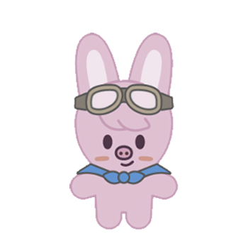
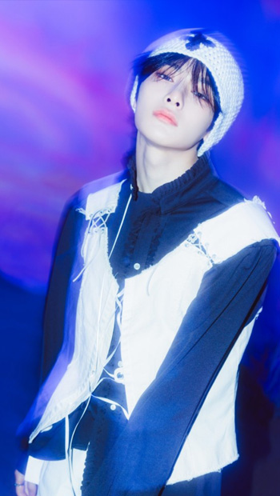
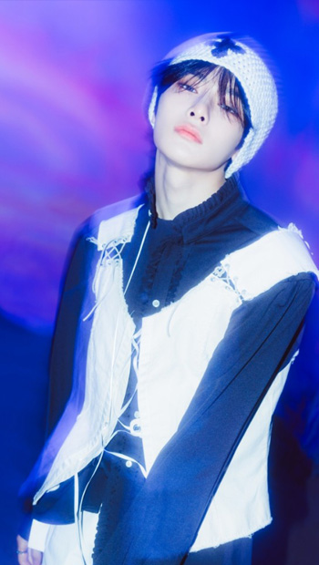
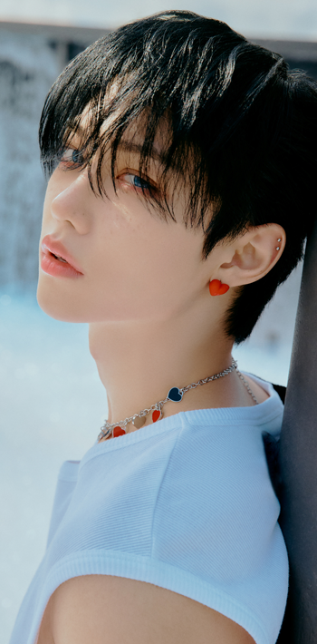
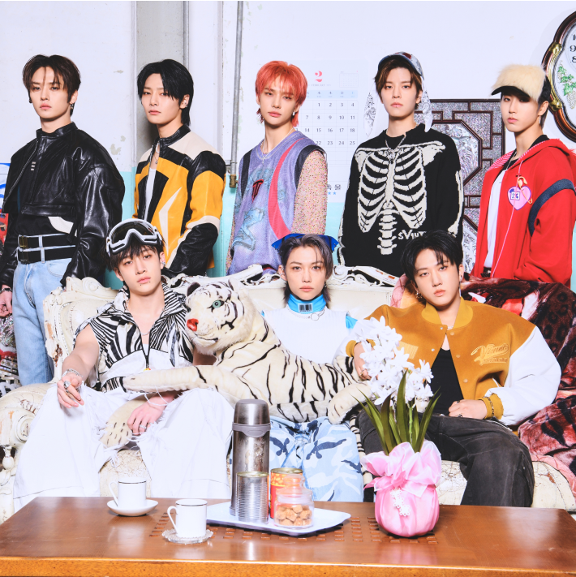

콘텐츠영역
STEP OUT
-
-
The reason for the group's birth is somewhat experimental and unusual. When JYP Entertainment started preparing for a new boy group, Park Jin-young made a suggestion to Bang-chan, who was a trainee for 7 years at the time: Bang-chan formed a team himself, practiced, and was ready for the company I'll make you debut if you're judged. It can be said to be a literal self-produced/self-made idol in which trainees are in charge of organizing and producing members and the company only reviews them.
-
-

PROFILE
Stray Kids is an eight-member boy group under JYP Entertainment. The team name means "children who get lost and find their way," which contains the identity of expressing their freewheeling charm and personality that differentiates them from any existing idol group through the program.
-
-
BANGCHAN
-
- BANGCHAN
- 1997. 10. 03.
- leader
- producer
- vocal
-
-
-
CHANGBIN
-

- CHANGBIN
- 1999. 08. 11.
- producer
- main rapper
-
-
-
HAN
-
- HAN
- 2000. 09. 14.
- producer
- rapper
- vocal
-
-
- 3RACHA
- With his extraordinary passion and ability in music, he is currently leading the team as the core and pillar of Stray Kids' music.
-
- DANCERACHA
- They so talented dancer, a visual and an angel like personality
-
-
LEE KNOW
-
- LEE KNOW
- 1998. 10. 25.
- main dancer
- producer
- vocal
-
-
-
HYUN JIN
-
- HYUN JIN
- 2000. 03. 20.
- main dancer
- rapper
-
-
-
FELIX
-
- FELIX
- 2000. 09. 15.
- dancer
- rapper
-
-
-
SEUNG MIN
-
- SEUNG MIN
- 2000. 09. 22.
- main vocal
-
-
-

I.N
-
- I.N
- 2001. 02. 08.
- vocal
-

-
- VOCALRACHA
- Leading the team with the vocal line of Stray Kids
-
- 3RACHA
- With his extraordinary passion and ability in music, he is currently leading the team as the core and pillar of Stray Kids' music.
- HAN
- BANG CHAN
- CHANG BIN
-
- DANCERACHA
- They so talented dancer, a visual and an angel like personality
- LEE KNOW
- FELIX
- HYUN JIN
-
- VOCALRACHA
- Leading the team with the vocal line of Stray Kids
- I.N
- SEUNG MIN
DISCOGRAPHY
-
- 5-STAR
- Stray Kids will release their new studio album "★★★★★ (5-STAR)" and their title track "Teuk" on June 2.
- 1. Hall of Fame
- 2. S-CLASS *title
- 3. ITEM
- 4. SUPER BOWL
-
- NOEASY
- Stray Kids will release their second full-length album "NOEASY" on August 23, 2021.
- 1. CHEESE
- 2. THUNDEROUS
- 3. DOMINO
- 4. SORRY,I LOVE YOU
-
- GO生
- Stray Kids will release their first full-length album, "GO LIVE," on June 17.
- 1. GO生
- 2. 神Menu
- 3. SLUMP (TOP ("Tower of God" OP))
- 4. BlUEPRINT
-
- MAXIDENT
- Stray Kids will release their new mini album "MAXIDENT" and their title track "CASE 143" on October 7, 2022.
- 1. CASE 143*title
- 2. CHILL
- 3. GIVE ME YOUR TMI
- 4. 3RACHA
-
- ODDINARY
- "K-pop 4th Generation Leader" Stray Kids will release their new mini album "ODDINARY" and title song "MANIAC" on March 18, 2022.
- 1. VENOM
- 2. MANIAC
- 3. CHARMER
- 4. FREEZE
-
- IN生
- Stray Kids will release their first full-length repackage album "INLIVE" on September 14.
- 1. The Hare and the Tortoise
- 2. BACK DOOR *title
- 3. B ME
- 4. ANY
CONTENTS
-

-
- ★★★★★S-CLASS
- Production team 3RACHA in the group, working on all the new songs including the title song 'Teuk'! Hip-hop legend Tiger JK collaboration!
-
- DANCE
- Stray Kids “특(S-Class)” Dance Practice Video (Suit ver.)
-
- TRAILER
- Stray Kids"★★★★★ (5-STAR)" Trailer
-
- MASHUP
- Stray Kids "★★★★★ (5-STAR)" Mashup Video
-

-
- ODDINARY
- You can feel the essence of Stray Kids with the unique characteristics of the new album "ODDINARY." Combining the two English words "Odd" and "Ordinary," which mean "weird" and "ordinary," "all of us have strange sides."

GALLERY
A B C D E F G
I Wanna send my code to you
8 letters is all it takes
And I'm gonna let you know
- 
- 